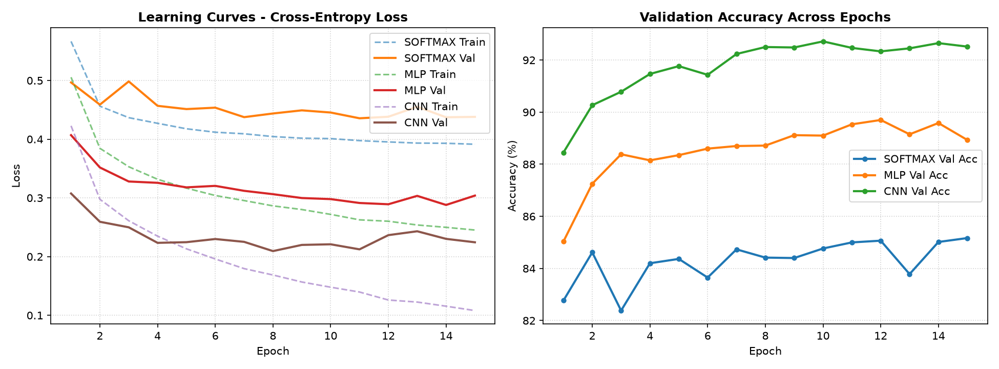
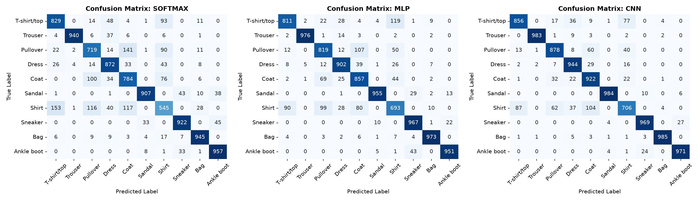
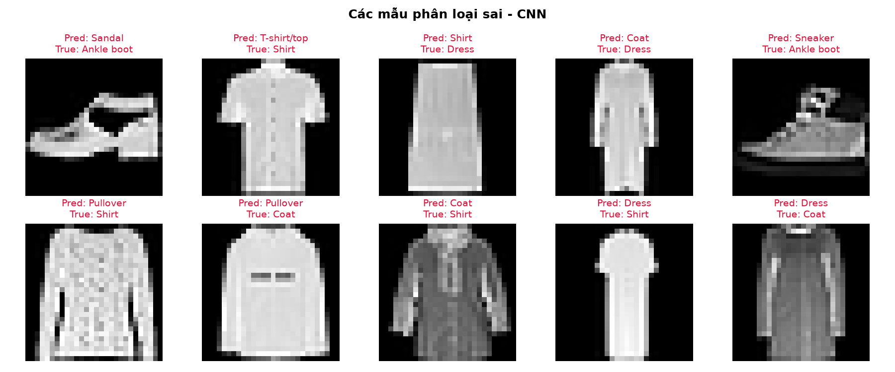
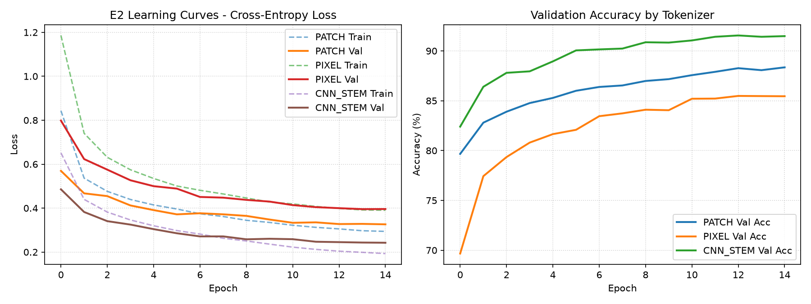
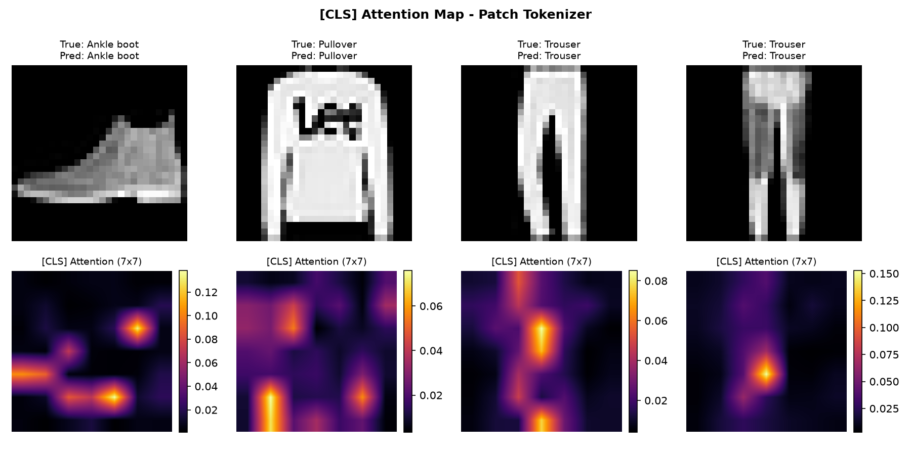
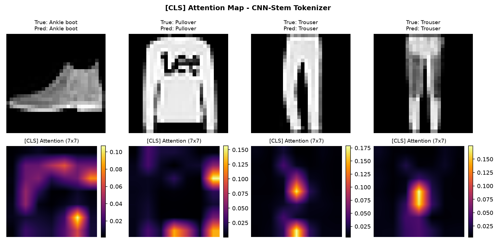

Sinh viên: Nguyễn Trần Phước (MSSV: 2470576)
Môn học: Học sâu và Ứng dụng trong Thị giác Máy tính (CO5085)
Dự án này thực hiện các bài tập E1, E2, và E3, tập trung vào bài toán phân loại ảnh trên tập dữ liệu nhỏ. Mục tiêu là xây dựng, huấn luyện và so sánh các kiến trúc học sâu khác nhau từ các mô hình tuyến tính đến mạng tích chập và mô hình chuỗi.
Xây dựng các bộ phân loại cơ bản. Đánh giá độ chính xác, số lượng tham số và phân tích lỗi giữa kiến trúc tuyến tính (Softmax), kết nối đầy đủ (MLP) và mạng nơ-ron tích chập (CNN).
Kết quả (Fashion-MNIST, 15 epochs):
| Mô hình | Số tham số | Val Acc (%) | Test Acc (%) | Test Loss |
|---|---|---|---|---|
| Softmax | 7,850 | 85.17 | 84.20 | 0.4502 |
| MLP | 235,914 | 89.70 | 89.04 | 0.3044 |
| CNN | 421,738 | 92.72 | 91.98 | 0.2507 |
CNN đạt độ chính xác cao nhất (91.98%) nhờ bảo toàn cấu trúc không gian 2D; MLP vượt trội so với Softmax tuyến tính.



Nhận xét: Đường cong Loss/Accuracy cho thấy CNN hội tụ nhanh và ổn định hơn 2 mô hình còn lại. Ma trận nhầm lẫn cho thấy nhầm lẫn chủ yếu giữa các lớp quần áo có hình dạng tương tự (Shirt, Pullover, Coat).
Hiện thực Multi-Head Self-Attention (MSA) từ đầu. Thử nghiệm các phương pháp tokenization khác nhau (Patch, Pixel, CNN-stem) và kết hợp MSA vào mô hình phân loại ảnh.
Kết quả (Fashion-MNIST, 15 epochs, d_model=64, 2 lớp, 4 heads):
| Tokenizer | Độ dài chuỗi (n) | Số tham số | Val Acc (%) | Test Acc (%) | Test Loss |
|---|---|---|---|---|---|
| Patch | 50 | 105,098 | 88.55 | 88.30 | 0.3278 |
| Pixel | 197 | 113,546 | 86.20 | 84.72 | 0.3998 |
| CNN-stem | 50 | 122,922 | 90.87 | 90.33 | 0.2828 |
CNN-stem cho kết quả tốt nhất (90.33%) nhờ trích xuất đặc trưng cục bộ trước khi đưa vào MSA; Pixel kém nhất dù chuỗi dài nhất (n=197), minh họa chi phí bậc hai không mang lại lợi thế.



Nhận xét: CNN-stem hội tụ nhanh và ổn định nhất trong 15 epoch nhờ chuỗi token ngắn nhưng giàu ngữ nghĩa cục bộ. Bản đồ Attention cho thấy token [CLS] tập trung rõ vào vùng chứa vật thể (trung tâm ảnh) thay vì nền, đặc biệt rõ nét hơn ở CNN-stem so với Patch.
Mô hình hóa hình ảnh dưới dạng dữ liệu chuỗi. Hiện thực và đánh giá khả năng nắm bắt phụ thuộc của LSTM và GRU so với các kiến trúc truyền thống.